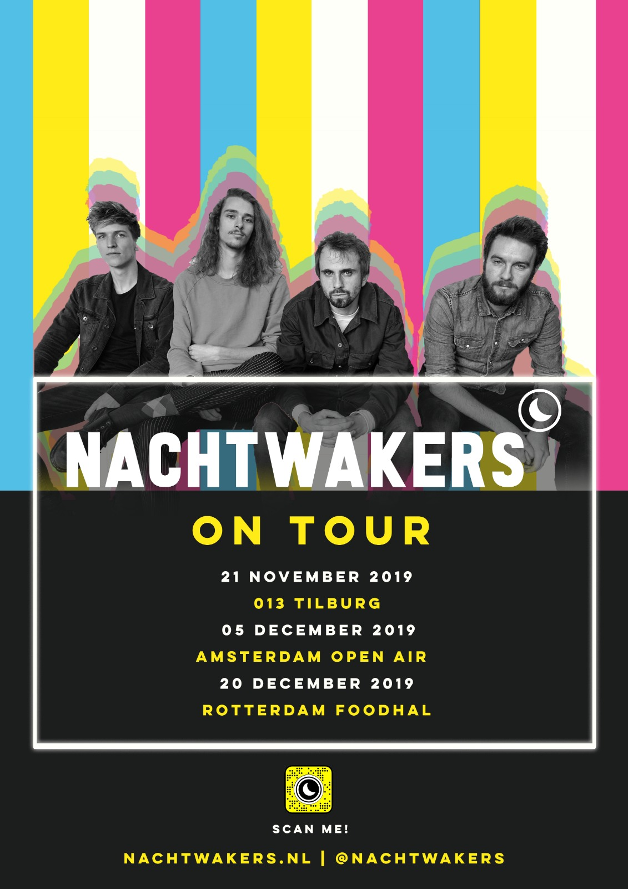
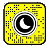
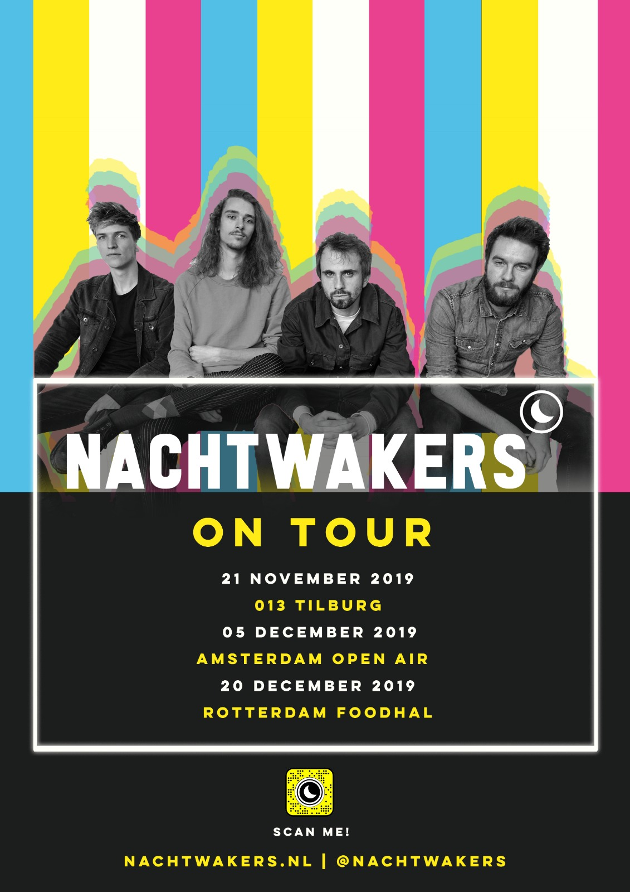
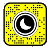

Final A.R Poster
After realizing that the 3D Model characters were too big to import into the lens, I decided to make the animation 2D.
It has the same concept as the other lenses, but in this one I put a Snapcode tracking at the bottom so anyone can scan the code and download the lens from the Snapchat Lens Library. Bahar was the one that made animation and I put the animation on top of the image tracking.
This lens is now available on Snapchat right now! Scan the snapchat code on the right to get the lens!
Conclusion
It was quite an experience to try to understand how the Lens Studio program works. It is very similar to Cinema 4D, the controls are pretty identical. But of course you can do way more with Cinemas 4D.
The only problem we encountered was that the lens cannot exceed the 4MB limit.

 


